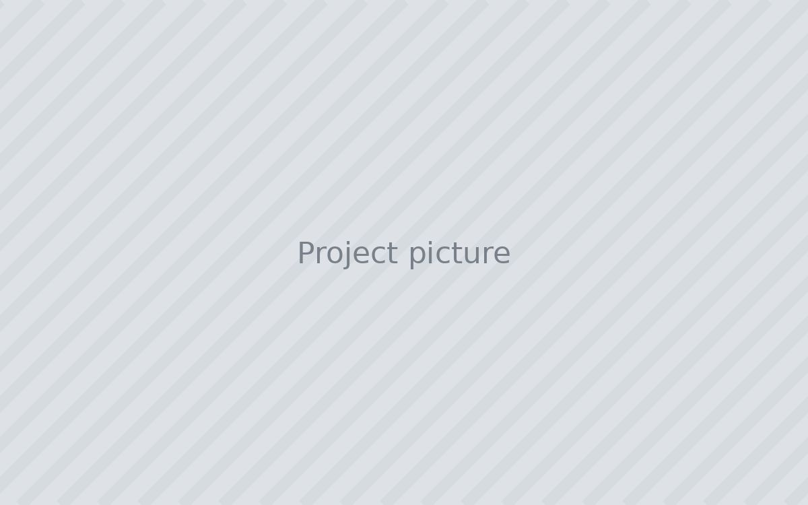

First blog post
November 10, 2026
What you did, what worked and what did not. Click this text to change it.
A short description of the project: what it is and why you built it. Click to change it.

November 10, 2026
What you did, what worked and what did not. Click this text to change it.